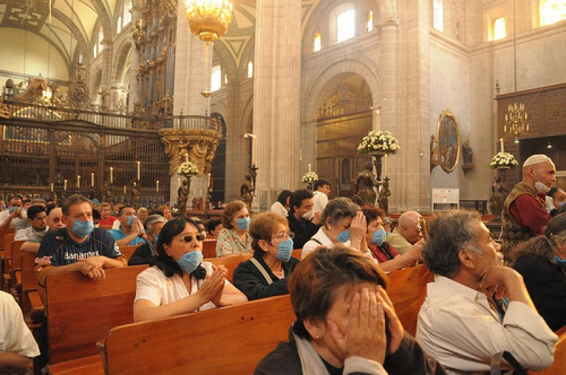
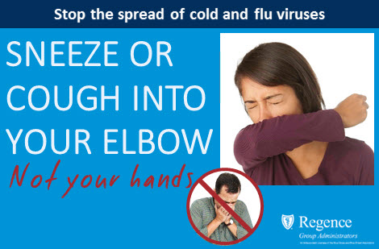
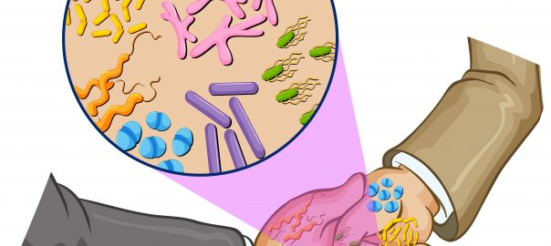
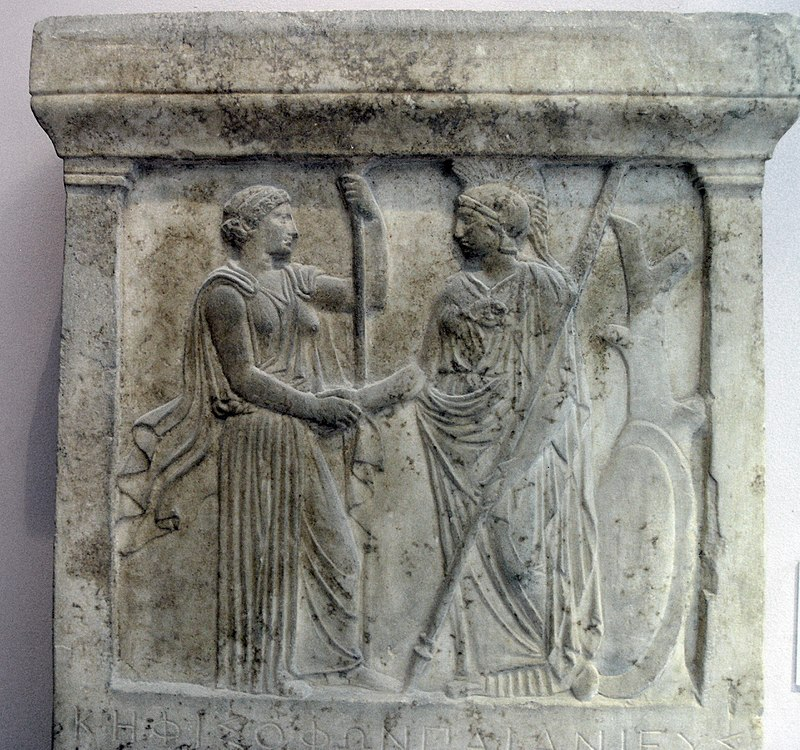
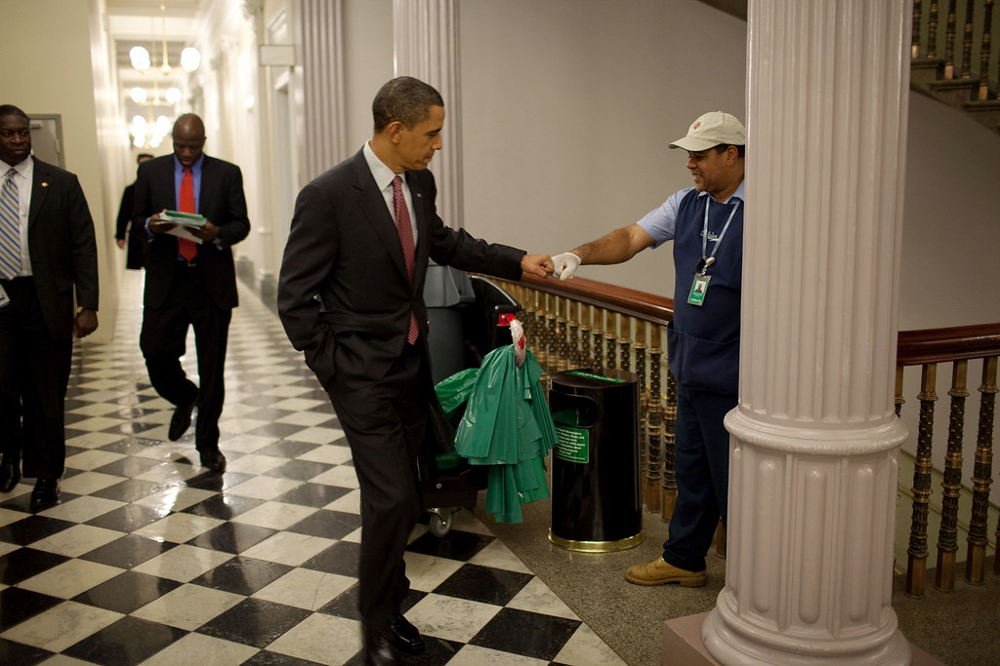
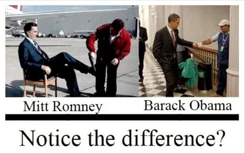
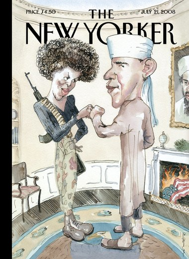
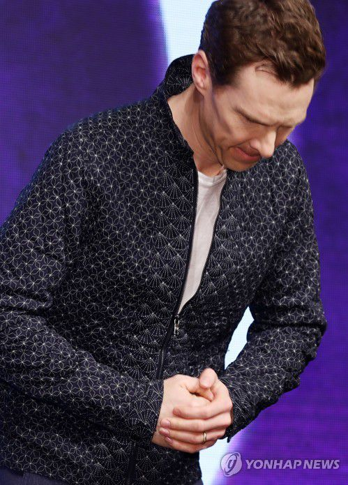

바이러스, 목사님, 그리고 악수
게시: 2020-01-30T06:30:54+09:00
중국 우한발 신종 코로나 바이러스에 대한 공포가 커지고 있습니다만 사실 알고보면 이미 우리 주변에는 더 무서운 전염병이 많이 돌고 있습니다. 가령 올해 1월 15일자 뉴스를 보면 미국은 이미 이 전염병에 1천만 명 정도가 감염되고 최소 4800명이 사망했습니다. 바로 독감입니다. 美 독감 대유행.. 석달새 4800명 사망 https://news.v.daum.net/v/20200115030248873 "지난해 10월 1일부터 이달 4일까지 약 석 달간 미국에서 최소 970만 명의 독감 환자가 발생했다고 미 질병통제예방센터(CDC)가 13일 밝혔다. 이로 인해 최소 4800명이 숨지고 8만7000명이 입원했다. 지난 시즌 같은 기간에 최소 620만 명의 환자가 발생한 것에 비해 독감 환자가 350만 명가량 늘었다." 흔히들 '춥게 입고 다니면 감기 걸린다' 라고 하지만 정확하게는 감기에 걸린 사람 근처에 있으면 감기에 걸리는 것입니다. 근처에 있다는 사실만으로는 감기에 걸리지 않는데, 환자가 재채기 등을 할 때 튀어나오는 미세한 침방울이 공기를 통해 코로 들어오거나 혹은 그런 침방울이 묻은 손을 코에 댈 때 감기가 옮습니다. 코로나 바이러스이건 독감이건 감기이건, 가장 중요한 예방책은 손을 자주 씻는 것입니다. 생각날 때마다 손을 하루에 10번씩만 씻어도 많은 병을 예방할 수 있습니다. 그런데 (제 경험상) 우리나라 사람들의 손씻기 습관은 매우 개탄스러울 정도로 좋지 않습니다. 화장실에서 작은 볼 일을 보고난 뒤에 비누로 정성들여 손을 닦는 사람이 예상 외로 그리 많지 않습니다. 씻는 사람들도 그냥 예의상 물만 슬쩍 적시고 마는 사람들이 많더라고요. 수돗물은 성수가 아니기 때문에 그렇게 적시기만 하면 오히려 세균이 더 폭발적으로 증식됩니다. 대충 물수건으로 닦았으니 괜찮다고 생각하는 분들도 많은데, 그거야 말로 세균 배양을 위한 수분을 충분히 공급하는 꼴입니다. (바이러스는 반대로 건조한 곳에서 증식이 잘 된다던데...) 손을 깨끗이 씻어도 뒷자리에 앉은 사람이 계속 기침과 재채기를 해대면 감기나 독감이 옮을 가능성이 많습니다. 따라서 음식점이나 극장, 쇼핑몰처럼 사람 많은 밀폐된 공간에는 가지 않는 것이 좋습니다. 그래서 전염병에 대한 공포심이 커지면 당연히 경제에 좋지 않습니다. 어떻게 생각하면 극장이야 집에서 VOD를 봐도 되고 음식이야 배달을 시켜먹으면 됩니다. 쇼핑도 온라인으로 하면 됩니다. 그래도 경제, 특히 고용에는 꽤 큰 타격이 올 것이라고 생각합니다. 그런데 방송이나 언론에서도 감히 언급을 못하는 장소가 있습니다. 바로 교회입니다. 1주일에 한 번씩 수백 수천 명이 모여 기침, 재채기를 공유할 뿐만 아니라 큰 소리로 찬송가를 부르며 침을 튀기는 밀폐 공간인 교회야 말로 코로나 바이러스나 독감이 전염되기 딱 좋은 장소거든요. 저도 교회를 다닙니다만 사실 독감이 유행할 때는 가정 예배로 대체하는 것이 낫지 않을까 하고 생각하곤 합니다. 특히 자신이 감기 기운이 있다 싶으면 교회에 안 나가는 것이 기독교 공동체에 도움이 되는 일인데, 그렇게 아프다고 교회를 빠지는 것이 교인으로서 의무를 다하지 않는 일이라고 생각해서 어떻게든 꼭 나오시는 분들도 있습니다. 그런 분들은 다른 사람들을 위해 마스크라도 끼고 계셔야 하는데, 교회 안에서 마스크를 끼는 것이 무례한 일이라고 생각하시는지 교회 밖에서는 쓰고 계셔도 교회 안에서는 벗는 경우도 많더라고요.

(2009년 H1N1 바이러스가 대유행할 때의 어느 교회 사진입니다. 교회에서도, 아니 특히 교회에서는 마스크를 낄 필요가 있습니다. 특히 감기 환자가 마스크를 착용해야 합니다. 마스크는 감기 걸린 사람 자신을 보호하는 것이 아니라, 감기 걸린 사람으로부터 다른 사람들을 보호하기 위해 환자가 꼭 착용해야 하는 물건입니다.)

(재채기나 기침을 할 때는 절대 그냥 허공에 하시면 안되고 가려야 합니다. 그렇다고 손으로 가리셔도 안 됩니다. 대개 그렇게 기침을 막으면서 묻은 바이러스를 손을 통해 문 손잡이나 엘리베이터 버튼 같은 것에 옮기기 때문입니다. 자신의 자켓 안쪽에 하거나 자켓을 입고 있지 않을 경우 그림처럼 자신의 팔꿈치 안쪽에 하는 것이 맞습니다. 손수건이나 휴지에 하는 것도 안 좋은 것이, 그래봐야 결국 손수건을 잡은 손에 바이러스가 묻어날 확률이 많기 때문입니다.) 아직 코로나 바이러스가 모든 신도들이 교회에 나가지 않아야 할 정도로 심각한 것 같지는 않습니다만, 아마 사태가 심각해져도 방송이나 언론에서도 차마 '교회도 가급적 나가지 마세요'라는 말은 하지 못할 것입니다. 굉장히 민감한 문제이거든요. 실제로 이런 위기 상황일 수록 신도들은 마음의 위안과 하나님의 보호를 바라고 교회에 가고 싶어합니다. 또 교회에서도, 신도들이 안 나오면 당장 헌금을 걷지 못하므로 운영에 큰 타격이 옵니다. 제가 가장 찜찜하게 생각하는 것은 교회에서의 악수입니다. 보통 예배가 끝나면 신도들이 나가는 길에 목사님과 장로님들이 줄지어 서서 웃으며 신도들과 일일이 악수를 합니다. 수백 명의 신도들 중에 누군가는 감기에 걸렸을것이고 기침을 하다 입을 손으로 가린 사람도 있을텐데, 그렇게 손에 코로나 바이러스나 독감 바이러스를 묻힌 사람이 목사님 손을 매개로 해서 모든 신도들과 최악의 피부 접촉을 하는 것입니다. 이건 전염병 전파에 있어 최악의 환경입니다.
전에 다니던 교회에서의 일이었는데, 제가 한번은 감기에 걸렸습니다. 그래서 "제가 감기라서요..."라고 하며 악수를 사양하자 목사님은 신도들과 악수하는 것이 자신의 의무라고 생각하셨는지 "에이 난 괜찮아" 라며 굳이 제 손을 잡으려고 하시더라고요. 제가 평소 버르장머리가 없는 편이라서 황급히 "제가 안 괜찮습니다"라며 매몰차게 손을 뿌리쳤는데, 그러니까 목사님이 상당히 멋적은 표정을 하시며 섭섭하게 생각하시더라고요.

(악수는 전염병 예방 측면에서 매우 좋지 않습니다. 특히 목사님처럼 모든 신도들과 악수를 연이어 하는 경우가 최악이에요.) 원래 악수는 서양에서 들어온 인사법입니다. 고대 그리스 시절에도 이미 악수가 있었다고 하니까 굉장히 오래된 것인 모양인데, 지금은 전세계에 다 퍼져 있습니다. 우리나라에는 아마도 미국인들을 통해서 수입된 것 같은데, 원래 미국에서는 악수할 때 서로의 눈을 쳐다보며 힘있게 손을 쥐는 것이 예의랍니다. 대충 슬쩍 쥐면 '이 인간이 나와 신체 접촉을 불쾌하게 생각하는구나' 또는 '뭔가 캥기는 것이 있나?' 라는 생각을 할 수도 있다고 하네요. 그에 비해 우리나라에서는 손을 꽉 쥐면 '뭐야 이거 한번 해보자는거야?' 라는 공격적인 신호로 받아들이지요. 또 대개 우리나라에서는 윗사람과 악수를 하며 상대의 눈을 똑바로 쳐다보다가는 '건방진 놈'이라는 소리를 듣기 딱 좋습니다. 악수를 하며 동시에 고개를 숙이는 것이 보통이지요. 다만 우리나라에서도 군복을 입은 군인은 절대 악수를 하며 고개를 숙여서는 안 된다고 알고 있습니다만, 맞는지 모르겠습니다. 이건 몰라서 여쭙는 건데, 원래 군복 입은 군인은 공식적인 자리에서는 어떤 경우에도 고개를 숙여서는 안되지 않나요 ? 몇 주전에 직접 본 일입니다만, 국회 옆문으로 웬 고급 승용차가 들어가더라고요. 그런데 거기 서계신 경찰인지 경비원인지 아무튼 제복을 입은 분이 그 차를 보고 거수 경례를 하더니 곧 손을 내리고 어정쩡하게 고개를 숙여 절을 하더라고요. 대체 그 차에 누가 탔길래, 또 저 경비원은 대체 교육을 어떻게 받았길래 저렇게 족보에도 없는 경례를 하나 싶었습니다.

(고대 그리스 시대의 악수)
(트황상이 아베에게 시전해서 유명해졌던 19초짜리 파워 악수를 통한 교육... 외신에도 '누가 진짜 보스인지 알려주는 19-seconder' 라고 표현하더군요.)
(그러나 트황상은 젊고 근육질인 캐나다 총리 트뤼도에게 굴욕을 당하는데... 저 트위터 포스팅의 'Do you even lift, bro?'에서 lift는 역기 운동을 뜻하는 것으로서, '이봐, 자네 운동 하기는 하나?' 정도의 표현으로 보면 되겠습니다. )
아무튼 분명히 악수는 전염병 전파에 딱 좋은, 보건적으로 좋지 않은 예절입니다. 그래서 2009년 H1N1 바이러스가 대유행할 때, 캘거리(Calgary) 대학의 의대 학장 피즈비(Tomas Feasby)라는 분이 '악수보다는 주먹 맞대기(fist bump)를 권고한다' 라고 제안하기도 했습니다. 저도 거기에 대찬성입니다. 우리 사회는 특히 연장자에 대한 예절이 과다해서, 역으로 나이가 많은 사람들이 피해를 볼 지경이라고 저는 생각합니다. 가령 직장에서만 해도 자기 팀에 자기보다 나이 많은 직원이 새로 들어오는 것을 원하지 않습니다. 그로 인해 나이 때문에 취업에서 차별을 받게 됩니다. 악수를 피스트 범프로 바꾼다고 우리 사회에서 그런 나이에 대한 강박관념이 없어질 것 같지는 않지만, 그래도 작은 계기가 되지 않을까 합니다. 무엇보다, 교회 같은 곳에서 목사님이 친절하게 모든 신도들에게 바이러스를 나눠주는 일은 줄어들 것이라고 생각합니다.

(제가 피스트 범프를 보고 진짜 멋지다 라고 생각했던 유명한 사진입니다. 대통령과 청소부가 서로 동등하게 피스트 범프를 나눌 수 있는 사회 분위기가 되었으면 합니다.)

(당시 미국 선거에서 이 짤이 많이 돌아다녔지요.)

(하지만 미국에서도 피스트 범프에 대해 부정적인 시각이 많았습니다. 2008년 오바마가 대통령 선거 운동을 할 때 와이프인 미쉘과 피스트 범프를 했는데, 그에 대해 폭스 뉴스의 한 앵커가 '테러리스트들이 하는 주먹질'이라고 비난했다가 나중에 사과하기도 했습니다.) 그런데 아무리 생각해봐도 당장 이번 일요일에 목사님에게 주먹을 들이밀진 못할 것 같습니다. 저도 목사님에게 악수를 하면서 고개를 숙여 절도 동시에 하는데, 피스트 범프를 하면서 고개를 숙이면 진짜 어정쩡할 것 같거든요. 그렇다고 목사님에게 인사를 하면서 고개를 빳빳이 들기도 그렇고... 그냥 역시 우리 전통 방식으로 공손하게 고개 숙여 절만 하고 와야겠어요. 피부 접촉이 전혀 없으니 그게 전염병 예방에는 훨씬 좋네요.

** 이번 신종 코로나 바이러스 사태를 통해 우리 사회의 집단 증오심이 또 드러나는 것 같아 마음이 아픕니다. 성현들의 말씀을 생각합시다.
남에게 대접을 받고자 하는 대로 너희도 남을 대접하라 - 예수님 (눅 6:31)
자기가 원하지 않는 것은 남에게 베풀지 말라 (己所不欲勿施於人) - 공자님 (논어 위령공 편)
Source : https://en.wikipedia.org/wiki/Handshake https://en.wikipedia.org/wiki/Fist_bump https://www.telegraph.co.uk/news/2017/02/11/donald-trump-mocked-awkward-handshake-japanese-prime-minister/ https://www.newstatesman.com/politics/staggers/2017/02/brief-history-donald-trump-s-handshakes https://www.newyorker.com/magazine/2008/07/21